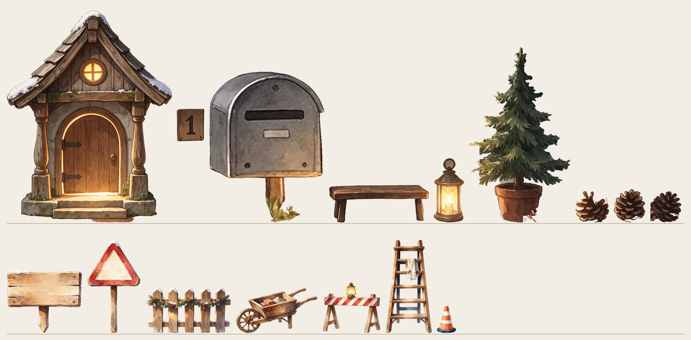
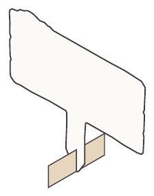
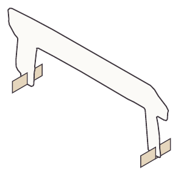
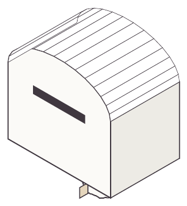
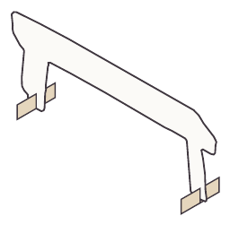
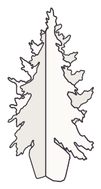
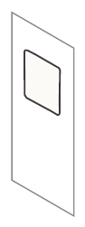
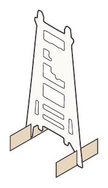

Tomtini · Bastelanleitung
Tomtes Haus aus Papier
Tomtes Haus mit Tür zum Aufmachen, dazu Briefkasten, Zahlenschild, Bank, Laterne, Baum und eine kleine Baustelle. Alles aus dem Tomtini-Bild, auf normalem Druckerpapier.

Vor dem Basteln
- Drucken in Farbe und Originalgröße.Einseitig, „100 %“, Qualität hoch, kein Sparmodus. Unten auf jedem Bogen ist ein Balken: Er muss genau 50 mm lang sein, sonst passen die Schlitze nicht.
- Das braucht ihr.2 neue Klebestifte, Schere, Lineal, Tesafilm, doppelseitiges Klebeband oder Malerkrepp. Cutter mit Unterlage für drei kurze Schnitte, die macht ein Erwachsener.
- Pink heißt schneiden.Gestrichelt heißt falten. Schraffierte Laschen werden eingeklebt.
- Die Tanne kommt später.Sie bleibt im Umschlag, bis Tomte an Tag 15 um einen Baum für seinen Garten bittet.
- Haus an die Wand, alles andere steht.Nur das Haus wird geklebt. Alle anderen Teile stehen auf gesteckten Füßen.
- Licht nur mit Batterie.LED-Teelicht oder Mini-Lichterkette mit verschraubtem Batteriefach, auf den Boden gelegt wie im Bild. Keine echte Kerze, keine losen Knopfzellen.
Drei Handgriffe, die überall gleich sind
- 1
Falten statt Ausrichten
Fast jedes Teil steht zweimal nebeneinander: vorn und gespiegelt. Grob ausschneiden, an der gestrichelten Linie falten, innen bis an den Rand einkleben, zuklappen, fest andrücken.
Bei drei Feldern (Warnschild, Leiter, Pfosten): erst das leere Feld hinter die Rückseite, dann die Vorderseite darüber. Unter Büchern mindestens 30 Minuten pressen, dann an der pinken Linie schneiden.

- 2
Rücken an Rücken (Baum)
Der Baum hat einen eigenen Rückseiten-Bogen. Beide Bögen Rücken an Rücken kleben, Blattkanten bündig, gegen das Licht prüfen. Danach beide Lagen zusammen an der pinken Linie ausschneiden.
- 3
Klemmfuß
Holzfarbenes Querteil an der gestrichelten Linie falten und zukleben (Falz oben). Die pinke Linie von unten bis zum schwarzen Punkt einschneiden. Querteil quer von unten auf das Bein stecken wie einen Schuh, bis beide unten bündig sind.
Ein Röllchen Malerkrepp, Klebeseite außen, unter den Fuß: hält auf Boden und Wand und löst sich rückstandsfrei.

Haus, Briefkasten, Bank und Laterne
- 4
Das Haus ist die Wichteltür
- Haus ausschneiden, dann die Tür an der inneren Linie mit dem Cutter herausschneiden.
- Tür-Teil falten, kleben, ausschneiden. Türlasche von vorn durch die Öffnung nach hinten stecken, links hinten ankleben und mit Tesafilm sichern.
- Lichtfeld hinter die Öffnung kleben, nur am Rand Kleber, damit die Tür frei aufgeht.
- Haus mit doppelseitigem Klebeband oder Kreppröllchen an die Wand kleben, unten auf dem Boden.
- 5
Briefkasten
Teil A (vorn, Seite, Boden) und Teil B (hinten, Seite mit Klappe) ausschneiden, Briefschlitz und den schmalen Pfostenschlitz im Boden mit dem Cutter schneiden. A und B an den Laschen zur Box kleben, das Dach über den Bogen legen und die Laschen innen ankleben.
Pfosten (3 Lagen) mit dem Zapfen von unten durch den Boden stecken und innen an die Rückwand kleben. Unten die zwei langen Querteile kreuzen: Fuß A mit „Pfosten“ auf den Pfosten, Fuß B in den Schlitz „Fuß B“.

- 6
Ein Brief an Tomte
Ein A4-Blatt viermal in der Mitte falten (52 × 74 mm), dann passt es durch den Schlitz. Die Klappe in der Seite ist oben angeschlagen. Nachts anheben und die Briefe herausnehmen.
- 7
Bank, Laterne und Zapfen
Falten, kleben, ausschneiden, Klemmfuß unten. Das LED-Licht steht neben der Laterne, nicht hinter dem Papier.

Baum, Zahlenschild und Baustelle
- 8
Baum (an Tag 15)
Teil A und Teil B liegen gedreht auf einem Blatt. Mit dem Rückseiten-Bogen Rücken an Rücken kleben und ausschneiden. B (Schlitz von oben) auf A (Schlitz von unten) stecken, bis unten alles bündig ist.

- 9
Zahlenschild
Schildpfahl falten und kleben, die Tasche vorn aufkleben (Laschen nach hinten), Klemmfuß unten. Jede Nacht kommt das neue Schild in die Tasche: Schild 1 am 1. Dezember. Die übrigen außer Reichweite der Kinder aufbewahren, die alten legt Tomte neben den Pfahl.

- 10
Baustelle
Schilder, Warnschild, Zaun, Schubkarre, Bake, Leiter, Kegel, Kartons, Absperrband: vorher basteln, die Kinder dürfen nach dem JA mithelfen. Figuren mit Klemmfuß, das Band mit den Endschlitzen auf zwei Baken. Kartons zu Würfeln falten, sie stehen von selbst.
Aufgestellt wird alles am Abend des 30. November, das Schild „Eröffnung: 1. Dezember“ zuletzt. Wer es kleiner mag, lässt die Baustelle weg.

Wenn ein Klemmfuß wackelt: das Querteil einmal fest zusammendrücken oder einen zweiten Schlitz etwas knapper schneiden. Weiße Schnittkanten mit braunem Buntstift nachfahren, dann sieht man das Papier kaum.